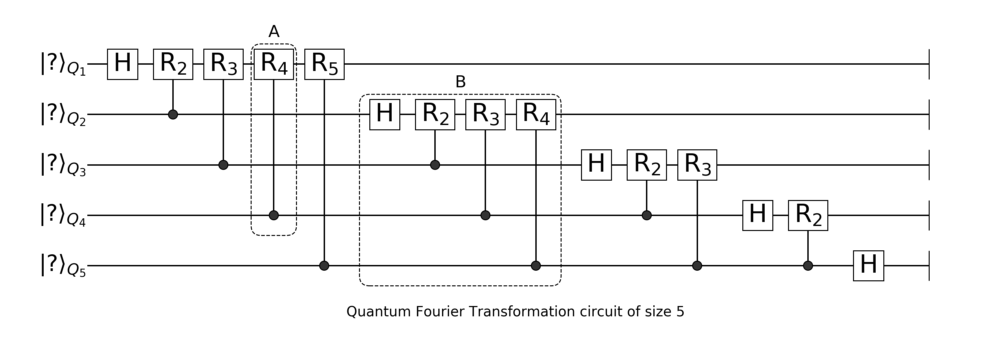
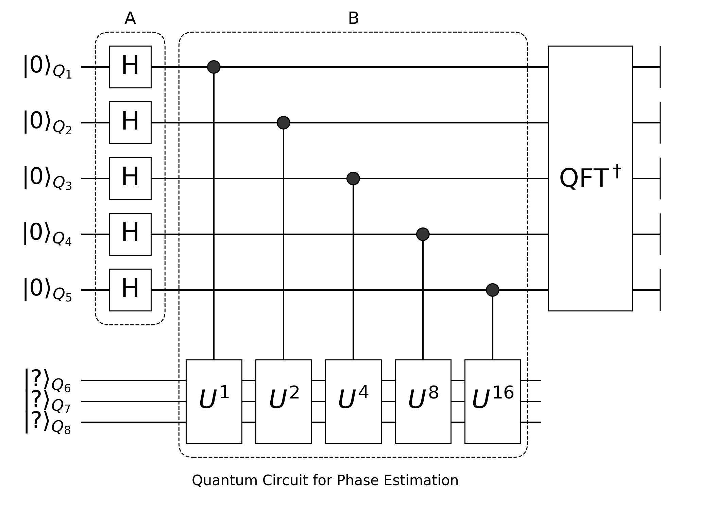

Quantum Fourier Transformation and Phase Estimation
Let's use Yao first
using YaoQuantum Fourier Transformation
The Quantum Fourier Transformation (QFT) circuit is to repeat two kinds of blocks repeatly:

The basic building block control phase shift gate is defined as
\[R(k)=\begin{bmatrix} 1 & 0\\ 0 & \exp\left(\frac{2\pi i}{2^k}\right) \end{bmatrix}\]
Let's define block A and block B, block A is actually a control block.
A(i, j) = control(i, j=>shift(2π/(1<<(i-j+1))))A (generic function with 1 method)Once you construct the blockl you can inspect its matrix using mat function. Let's construct the circuit in dash box A, and see the matrix of $R_4$ gate.
R4 = A(4, 1)(n -> control(n, 4, 1 => shift(0.39269908169872414)))If you have read about preparing GHZ state, you probably know that in Yao, we could just leave the number of qubits, and it will be evaluated when possible.
R4(5)nqubits: 5
control(4)
└─ (1,) shift(0.39269908169872414)its matrix will be
mat(R4(5))32×32 Diagonal{ComplexF64, Vector{ComplexF64}}:
1.0+0.0im ⋅ ⋅ ⋅ ⋅ ⋅ ⋅ ⋅ ⋅ ⋅ ⋅ ⋅ ⋅ ⋅ ⋅ ⋅ ⋅ ⋅ ⋅ ⋅ ⋅ ⋅ ⋅ ⋅ ⋅ ⋅ ⋅ ⋅ ⋅ ⋅ ⋅ ⋅
⋅ 1.0+0.0im ⋅ ⋅ ⋅ ⋅ ⋅ ⋅ ⋅ ⋅ ⋅ ⋅ ⋅ ⋅ ⋅ ⋅ ⋅ ⋅ ⋅ ⋅ ⋅ ⋅ ⋅ ⋅ ⋅ ⋅ ⋅ ⋅ ⋅ ⋅ ⋅ ⋅
⋅ ⋅ 1.0+0.0im ⋅ ⋅ ⋅ ⋅ ⋅ ⋅ ⋅ ⋅ ⋅ ⋅ ⋅ ⋅ ⋅ ⋅ ⋅ ⋅ ⋅ ⋅ ⋅ ⋅ ⋅ ⋅ ⋅ ⋅ ⋅ ⋅ ⋅ ⋅ ⋅
⋅ ⋅ ⋅ 1.0+0.0im ⋅ ⋅ ⋅ ⋅ ⋅ ⋅ ⋅ ⋅ ⋅ ⋅ ⋅ ⋅ ⋅ ⋅ ⋅ ⋅ ⋅ ⋅ ⋅ ⋅ ⋅ ⋅ ⋅ ⋅ ⋅ ⋅ ⋅ ⋅
⋅ ⋅ ⋅ ⋅ 1.0+0.0im ⋅ ⋅ ⋅ ⋅ ⋅ ⋅ ⋅ ⋅ ⋅ ⋅ ⋅ ⋅ ⋅ ⋅ ⋅ ⋅ ⋅ ⋅ ⋅ ⋅ ⋅ ⋅ ⋅ ⋅ ⋅ ⋅ ⋅
⋅ ⋅ ⋅ ⋅ ⋅ 1.0+0.0im ⋅ ⋅ ⋅ ⋅ ⋅ ⋅ ⋅ ⋅ ⋅ ⋅ ⋅ ⋅ ⋅ ⋅ ⋅ ⋅ ⋅ ⋅ ⋅ ⋅ ⋅ ⋅ ⋅ ⋅ ⋅ ⋅
⋅ ⋅ ⋅ ⋅ ⋅ ⋅ 1.0+0.0im ⋅ ⋅ ⋅ ⋅ ⋅ ⋅ ⋅ ⋅ ⋅ ⋅ ⋅ ⋅ ⋅ ⋅ ⋅ ⋅ ⋅ ⋅ ⋅ ⋅ ⋅ ⋅ ⋅ ⋅ ⋅
⋅ ⋅ ⋅ ⋅ ⋅ ⋅ ⋅ 1.0+0.0im ⋅ ⋅ ⋅ ⋅ ⋅ ⋅ ⋅ ⋅ ⋅ ⋅ ⋅ ⋅ ⋅ ⋅ ⋅ ⋅ ⋅ ⋅ ⋅ ⋅ ⋅ ⋅ ⋅ ⋅
⋅ ⋅ ⋅ ⋅ ⋅ ⋅ ⋅ ⋅ 1.0+0.0im ⋅ ⋅ ⋅ ⋅ ⋅ ⋅ ⋅ ⋅ ⋅ ⋅ ⋅ ⋅ ⋅ ⋅ ⋅ ⋅ ⋅ ⋅ ⋅ ⋅ ⋅ ⋅ ⋅
⋅ ⋅ ⋅ ⋅ ⋅ ⋅ ⋅ ⋅ ⋅ 0.92388+0.382683im ⋅ ⋅ ⋅ ⋅ ⋅ ⋅ ⋅ ⋅ ⋅ ⋅ ⋅ ⋅ ⋅ ⋅ ⋅ ⋅ ⋅ ⋅ ⋅ ⋅ ⋅ ⋅
⋅ ⋅ ⋅ ⋅ ⋅ ⋅ ⋅ ⋅ ⋅ ⋅ 1.0+0.0im ⋅ ⋅ ⋅ ⋅ ⋅ ⋅ ⋅ ⋅ ⋅ ⋅ ⋅ ⋅ ⋅ ⋅ ⋅ ⋅ ⋅ ⋅ ⋅ ⋅ ⋅
⋅ ⋅ ⋅ ⋅ ⋅ ⋅ ⋅ ⋅ ⋅ ⋅ ⋅ 0.92388+0.382683im ⋅ ⋅ ⋅ ⋅ ⋅ ⋅ ⋅ ⋅ ⋅ ⋅ ⋅ ⋅ ⋅ ⋅ ⋅ ⋅ ⋅ ⋅ ⋅ ⋅
⋅ ⋅ ⋅ ⋅ ⋅ ⋅ ⋅ ⋅ ⋅ ⋅ ⋅ ⋅ 1.0+0.0im ⋅ ⋅ ⋅ ⋅ ⋅ ⋅ ⋅ ⋅ ⋅ ⋅ ⋅ ⋅ ⋅ ⋅ ⋅ ⋅ ⋅ ⋅ ⋅
⋅ ⋅ ⋅ ⋅ ⋅ ⋅ ⋅ ⋅ ⋅ ⋅ ⋅ ⋅ ⋅ 0.92388+0.382683im ⋅ ⋅ ⋅ ⋅ ⋅ ⋅ ⋅ ⋅ ⋅ ⋅ ⋅ ⋅ ⋅ ⋅ ⋅ ⋅ ⋅ ⋅
⋅ ⋅ ⋅ ⋅ ⋅ ⋅ ⋅ ⋅ ⋅ ⋅ ⋅ ⋅ ⋅ ⋅ 1.0+0.0im ⋅ ⋅ ⋅ ⋅ ⋅ ⋅ ⋅ ⋅ ⋅ ⋅ ⋅ ⋅ ⋅ ⋅ ⋅ ⋅ ⋅
⋅ ⋅ ⋅ ⋅ ⋅ ⋅ ⋅ ⋅ ⋅ ⋅ ⋅ ⋅ ⋅ ⋅ ⋅ 0.92388+0.382683im ⋅ ⋅ ⋅ ⋅ ⋅ ⋅ ⋅ ⋅ ⋅ ⋅ ⋅ ⋅ ⋅ ⋅ ⋅ ⋅
⋅ ⋅ ⋅ ⋅ ⋅ ⋅ ⋅ ⋅ ⋅ ⋅ ⋅ ⋅ ⋅ ⋅ ⋅ ⋅ 1.0+0.0im ⋅ ⋅ ⋅ ⋅ ⋅ ⋅ ⋅ ⋅ ⋅ ⋅ ⋅ ⋅ ⋅ ⋅ ⋅
⋅ ⋅ ⋅ ⋅ ⋅ ⋅ ⋅ ⋅ ⋅ ⋅ ⋅ ⋅ ⋅ ⋅ ⋅ ⋅ ⋅ 1.0+0.0im ⋅ ⋅ ⋅ ⋅ ⋅ ⋅ ⋅ ⋅ ⋅ ⋅ ⋅ ⋅ ⋅ ⋅
⋅ ⋅ ⋅ ⋅ ⋅ ⋅ ⋅ ⋅ ⋅ ⋅ ⋅ ⋅ ⋅ ⋅ ⋅ ⋅ ⋅ ⋅ 1.0+0.0im ⋅ ⋅ ⋅ ⋅ ⋅ ⋅ ⋅ ⋅ ⋅ ⋅ ⋅ ⋅ ⋅
⋅ ⋅ ⋅ ⋅ ⋅ ⋅ ⋅ ⋅ ⋅ ⋅ ⋅ ⋅ ⋅ ⋅ ⋅ ⋅ ⋅ ⋅ ⋅ 1.0+0.0im ⋅ ⋅ ⋅ ⋅ ⋅ ⋅ ⋅ ⋅ ⋅ ⋅ ⋅ ⋅
⋅ ⋅ ⋅ ⋅ ⋅ ⋅ ⋅ ⋅ ⋅ ⋅ ⋅ ⋅ ⋅ ⋅ ⋅ ⋅ ⋅ ⋅ ⋅ ⋅ 1.0+0.0im ⋅ ⋅ ⋅ ⋅ ⋅ ⋅ ⋅ ⋅ ⋅ ⋅ ⋅
⋅ ⋅ ⋅ ⋅ ⋅ ⋅ ⋅ ⋅ ⋅ ⋅ ⋅ ⋅ ⋅ ⋅ ⋅ ⋅ ⋅ ⋅ ⋅ ⋅ ⋅ 1.0+0.0im ⋅ ⋅ ⋅ ⋅ ⋅ ⋅ ⋅ ⋅ ⋅ ⋅
⋅ ⋅ ⋅ ⋅ ⋅ ⋅ ⋅ ⋅ ⋅ ⋅ ⋅ ⋅ ⋅ ⋅ ⋅ ⋅ ⋅ ⋅ ⋅ ⋅ ⋅ ⋅ 1.0+0.0im ⋅ ⋅ ⋅ ⋅ ⋅ ⋅ ⋅ ⋅ ⋅
⋅ ⋅ ⋅ ⋅ ⋅ ⋅ ⋅ ⋅ ⋅ ⋅ ⋅ ⋅ ⋅ ⋅ ⋅ ⋅ ⋅ ⋅ ⋅ ⋅ ⋅ ⋅ ⋅ 1.0+0.0im ⋅ ⋅ ⋅ ⋅ ⋅ ⋅ ⋅ ⋅
⋅ ⋅ ⋅ ⋅ ⋅ ⋅ ⋅ ⋅ ⋅ ⋅ ⋅ ⋅ ⋅ ⋅ ⋅ ⋅ ⋅ ⋅ ⋅ ⋅ ⋅ ⋅ ⋅ ⋅ 1.0+0.0im ⋅ ⋅ ⋅ ⋅ ⋅ ⋅ ⋅
⋅ ⋅ ⋅ ⋅ ⋅ ⋅ ⋅ ⋅ ⋅ ⋅ ⋅ ⋅ ⋅ ⋅ ⋅ ⋅ ⋅ ⋅ ⋅ ⋅ ⋅ ⋅ ⋅ ⋅ ⋅ 0.92388+0.382683im ⋅ ⋅ ⋅ ⋅ ⋅ ⋅
⋅ ⋅ ⋅ ⋅ ⋅ ⋅ ⋅ ⋅ ⋅ ⋅ ⋅ ⋅ ⋅ ⋅ ⋅ ⋅ ⋅ ⋅ ⋅ ⋅ ⋅ ⋅ ⋅ ⋅ ⋅ ⋅ 1.0+0.0im ⋅ ⋅ ⋅ ⋅ ⋅
⋅ ⋅ ⋅ ⋅ ⋅ ⋅ ⋅ ⋅ ⋅ ⋅ ⋅ ⋅ ⋅ ⋅ ⋅ ⋅ ⋅ ⋅ ⋅ ⋅ ⋅ ⋅ ⋅ ⋅ ⋅ ⋅ ⋅ 0.92388+0.382683im ⋅ ⋅ ⋅ ⋅
⋅ ⋅ ⋅ ⋅ ⋅ ⋅ ⋅ ⋅ ⋅ ⋅ ⋅ ⋅ ⋅ ⋅ ⋅ ⋅ ⋅ ⋅ ⋅ ⋅ ⋅ ⋅ ⋅ ⋅ ⋅ ⋅ ⋅ ⋅ 1.0+0.0im ⋅ ⋅ ⋅
⋅ ⋅ ⋅ ⋅ ⋅ ⋅ ⋅ ⋅ ⋅ ⋅ ⋅ ⋅ ⋅ ⋅ ⋅ ⋅ ⋅ ⋅ ⋅ ⋅ ⋅ ⋅ ⋅ ⋅ ⋅ ⋅ ⋅ ⋅ ⋅ 0.92388+0.382683im ⋅ ⋅
⋅ ⋅ ⋅ ⋅ ⋅ ⋅ ⋅ ⋅ ⋅ ⋅ ⋅ ⋅ ⋅ ⋅ ⋅ ⋅ ⋅ ⋅ ⋅ ⋅ ⋅ ⋅ ⋅ ⋅ ⋅ ⋅ ⋅ ⋅ ⋅ ⋅ 1.0+0.0im ⋅
⋅ ⋅ ⋅ ⋅ ⋅ ⋅ ⋅ ⋅ ⋅ ⋅ ⋅ ⋅ ⋅ ⋅ ⋅ ⋅ ⋅ ⋅ ⋅ ⋅ ⋅ ⋅ ⋅ ⋅ ⋅ ⋅ ⋅ ⋅ ⋅ ⋅ ⋅ 0.92388+0.382683imThen we repeat this control block over and over on different qubits, and put a Hadamard gate to ith qubit to construct i-th B block.
B(n, k) = chain(n, j==k ? put(k=>H) : A(j, k) for j in k:n)B (generic function with 1 method)We need to input the total number of qubits n here because we have to iterate through from k-th location to the last.
Now, let's construct the circuit by chaining all the B blocks together
qft(n) = chain(B(n, k) for k in 1:n)
qft(4)nqubits: 4
chain
├─ chain
│ ├─ put on (1)
│ │ └─ H
│ ├─ control(2)
│ │ └─ (1,) shift(1.5707963267948966)
│ ├─ control(3)
│ │ └─ (1,) shift(0.7853981633974483)
│ └─ control(4)
│ └─ (1,) shift(0.39269908169872414)
├─ chain
│ ├─ put on (2)
│ │ └─ H
│ ├─ control(3)
│ │ └─ (2,) shift(1.5707963267948966)
│ └─ control(4)
│ └─ (2,) shift(0.7853981633974483)
├─ chain
│ ├─ put on (3)
│ │ └─ H
│ └─ control(4)
│ └─ (3,) shift(1.5707963267948966)
└─ chain
└─ put on (4)
└─ H
Wrap QFT to an external block
In most cases, functions are enough to wrap quantum circuits, like A and B we defined above, but sometimes, we need to dispatch specialized methods on certain kinds of quantum circuit, or we want to define an external block to export, thus, it's useful to be able to wrap circuit to custom blocks.
First, we define a new type as subtype of PrimitiveBlock since we are not going to use the subblocks of QFT, if you need to use its subblocks, it'd be better to define it under CompositeBlock.
struct QFT <: PrimitiveBlock{2}
n::Int
end
YaoBlocks.nqudits(q::QFT) = q.nNow, let's define its circuit
circuit(q::QFT) = qft(q.n)circuit (generic function with 1 method)And forward mat to its circuit's matrix
YaoBlocks.mat(::Type{T}, x::QFT) where T = mat(T, circuit(x))You may notice, it is a little ugly to print QFT at the moment, this is because we print the type summary by default, you can define your own printing by overloading print_block
YaoBlocks.print_block(io::IO, x::QFT) = print(io, "QFT($(x.n))")Since it is possible to use FFT to simulate the results of QFT (like cheating), we could define our custom apply! method:
using FFTW, LinearAlgebra
function YaoBlocks.apply!(r::ArrayReg, x::QFT)
α = sqrt(length(statevec(r)))
invorder!(r)
lmul!(α, ifft!(statevec(r)))
return r
endNow let's check if our apply! method is correct:
r = rand_state(5)
r1 = r |> copy |> QFT(5)
r2 = r |> copy |> circuit(QFT(5))
r1 ≈ r2trueWe can get iQFT (inverse QFT) directly by calling adjoint
QFT(5)' [†]QFT(5)QFT and iQFT are different from FFT and IFFT in three ways,
- they are different by a factor of $\sqrt{2^n}$ with $n$ the number of qubits.
- the bit numbering will exchange after applying QFT or iQFT.
- due to the convention, QFT is more related to IFFT rather than FFT.
Phase Estimation
Since we have QFT and iQFT blocks we can then use them to realize phase estimation circuit, what we want to realize is the following circuit:

First we call Hadamard gates repeatly on first n qubits.
Hadamards(n) = repeat(H, 1:n)Hadamards (generic function with 1 method)Then in dashed box B, we have controlled unitaries:
ControlU(n, m, U) = chain(n+m, control(k, n+1:n+m=>matblock(U^(2^(k-1)))) for k in 1:n)ControlU (generic function with 1 method)each of them is a U of power $2^{(k-1)}$.
Since we will only apply the qft and Hadamard on first n qubits, we could use Subroutine, which creates a context of a sub-scope of the qubits.
PE(n, m, U) =
chain(n+m, # total number of the qubits
subroutine(Hadamards(n), 1:n), # apply H in local scope
ControlU(n, m, U),
subroutine(QFT(n)', 1:n))PE (generic function with 1 method)we use the first n qubits as the output space to store phase $ϕ$, and the other m qubits as the input state which corresponds to an eigenvector of oracle matrix U.
The subroutine here uses focus! and relax! to manage a local scope of quantum circuit, and only activate the first n qubits while applying the block inside the subroutine context, and the scope will be relax!ed back, after the context. This is equivalent to manually focus! then relax!
fullly activated
r = rand_state(5)ArrayReg{2, ComplexF64, Array...}
active qubits: 5/5
nlevel: 2first 3 qubits activated
focus!(r, 1:3)ArrayReg{2, ComplexF64, Array...}
active qubits: 3/5
nlevel: 2relax back to the original
relax!(r, 1:3)ArrayReg{2, ComplexF64, Array...}
active qubits: 5/5
nlevel: 2In this way, we will be able to apply small operator directly on the subset of the qubits.
Details about the algorithm can be found here: Quantum Phase Estimation Algorithm
Now let's check the results of our phase estimation.
First we need to set up a unitary with known phase, we set the phase to be 0.75, which is 0.75 * 2^3 == 6 == 0b110 .
N, M = 3, 5
P = eigen(rand_unitary(1<<M)).vectors
θ = Int(0b110) / 1<<N
phases = rand(1<<M)
phases[0b010+1] = θ
U = P * Diagonal(exp.(2π * im * phases)) * P'32×32 Matrix{ComplexF64}:
-0.0903906+0.0387976im -0.0368363-0.0471333im -0.210392+0.0218971im -0.0776051-0.087541im -0.102139-0.221285im 0.00902869-0.198882im -0.00292492+0.0955532im -0.102718-0.0846564im -0.190736-0.12178im -0.132602-0.237482im 0.115835-0.0780468im 0.272345-0.048883im -0.181486+0.0493499im 0.211942-0.0900921im -0.0399359+0.113282im -0.027195-0.118726im -0.0880441+0.00346375im -0.323725-0.0345598im -0.154225-0.0527068im -0.0120929-0.0880621im 0.0583023-0.0301575im -0.0711987+0.0385721im 0.139692-0.087942im -0.102717+0.116948im -0.145333-0.0917899im -0.0775329-0.0117592im -0.0272451+0.225714im 0.0344094+0.271553im 0.116314-0.154783im -0.00151336+0.00356557im 0.0634004-0.0916903im 0.0566719-0.19359im
0.22772+0.0656934im -0.0596797+0.0537374im 0.158129+0.140287im -0.135418-0.316658im 0.0203559-0.0923171im 0.166157-0.178453im 0.0471316-0.0616695im -0.0270934+0.0193065im -0.0762789-0.165933im -0.0319137+0.0966246im -0.000611072-0.152696im -0.124056+0.0322033im -0.207366+0.0144277im 0.00187691+0.296678im -0.0885782+0.152527im 0.00109792-0.0150179im 0.020352-0.0158867im 0.112468-0.101024im 0.0750179+0.16269im 0.0768008-0.0840102im 0.217285+0.177743im 0.0757886-0.0629169im -0.00317017-0.0903025im 0.163988-0.0741827im -0.0962898-0.0387287im -0.0767759-0.171102im 0.180827+0.233597im -0.0261289-0.0532519im -0.117479-0.0162429im -0.0926466+0.142426im -0.209135-0.0101798im -0.0733938+0.16129im
0.104361-0.0441183im 0.077455-0.158141im -0.0451074-8.38699e-5im -0.00720798-0.306566im 0.216866+0.0166898im 0.0765193-0.0245901im 0.0927811-0.10184im 0.0270613+0.0202933im -0.022821+0.205169im 0.092631-0.128563im -0.0399134-0.0100864im 0.0610443+0.0421978im -0.15131+0.204956im -0.0171761-0.0539696im 0.0542559-0.202306im 0.122523+0.113151im 0.0302959+0.0174605im -0.0240095-0.0517586im 0.14102+0.245189im 0.133331-0.00560491im -0.270613+0.00567538im 0.0451425-0.0432898im -0.162401+0.027899im -0.156998+0.0984525im -0.0501595+0.0748849im 0.110424+0.160418im 0.0615495+0.0137756im 0.134269+0.150943im 0.114401-0.0466878im 0.166752+0.323406im 0.247285-0.0501103im -0.0933295+0.140118im
-0.262185+0.0726906im -0.318688+0.0702924im 0.0254245-0.014861im -0.21885-0.11091im 0.181671+0.0523002im -0.0648304-0.0404717im 0.0205447+0.0406073im -0.0747518-0.0758122im -0.0646776+0.0272718im -0.0472176-0.0640191im -0.0535559-0.0818268im -0.0695817+0.0818136im 0.052651-0.0605217im 0.0399377+0.146446im 0.325517-0.197988im -0.159463+0.0882984im 0.371302-0.187692im 0.0109278-0.108177im -0.122888-0.00297303im -0.0303748-0.0113966im -0.065788-0.00797357im -0.0178283+0.0409772im 0.0388574-0.0982853im 0.0604301-0.191448im -0.0847745-0.208723im 0.0577904-0.0805069im 0.0480793-0.0571069im 0.222371-0.0116128im 0.0401984+0.0977703im -0.0562354-0.170377im 0.179144-0.107447im -0.0383286-0.00799374im
0.0870408-0.0853735im 0.0460571+0.0823189im 0.143393+0.0230188im -0.19661+0.00623224im 0.075286+0.111422im 0.167971-0.0754138im 0.0416967+0.168126im 0.179674+0.0609057im -0.0635306-0.0110206im -0.0794229+0.0500342im -0.103273-0.0996942im 0.200901-0.0140102im 0.109052-0.0370175im -0.181313+0.0853302im 0.12024-0.248324im 0.13373-0.0627764im 0.0751199+0.286989im -0.175209-0.137997im -0.284405-0.204439im 0.0598692-0.0783435im -0.239412+0.0929747im -0.235439-0.0437541im -0.0543327+0.0479119im -0.0560278+0.109959im 0.0339447+0.108289im -0.135322-0.0622297im 0.059765-0.00353714im -0.134264-0.143131im -0.057816-0.0210523im -0.113269+0.13048im -0.140469-0.00843333im -0.0573133-0.158583im
-0.00715768-0.0263896im 0.10426-0.0672699im 0.091346+0.0130443im -0.0335445+0.0766873im 0.199815-0.131531im -0.0747599-0.00293697im 0.263377+0.0223011im 0.00870306+0.0152042im 0.018897-0.139235im -0.045757-0.029758im -0.0803894+0.303238im -0.0471041-0.0565323im -0.000573381+0.267836im -0.0271183+0.0142713im 0.125772+0.138047im 0.0611534-0.0218057im -0.132722-0.0451338im -0.0202086-0.129442im -0.243173-0.187407im -0.10922+0.162473im 0.0789993+0.0568095im 0.0447016+0.0829763im 0.0154346+0.0736621im -0.180543-0.178315im 0.00123927+0.0390189im 0.325727-0.0255997im -0.11814+0.248899im 0.257959-0.0671554im -0.140654+0.124438im 0.0251334+0.0937033im -0.0912671+0.119164im -0.12949+0.000693722im
0.0698205-0.0791687im -0.0813413-0.0448892im 0.101802-0.065486im 0.025362+0.115767im -0.172372-0.0632433im 0.0514738-0.10424im 0.14676+0.158993im 0.270155-0.126832im 0.0860771+0.0635169im 0.00558826+0.106637im 0.169671+0.0901668im -0.148035-0.12717im -0.116704-0.184729im 0.0136124+0.0985779im -0.0624953+0.0237336im -0.169955-0.143519im -0.0920062-0.086331im -0.108085-0.117747im 0.291756-0.0129104im -0.203622-0.0508728im -0.240715-0.126589im -0.260696-0.0422504im -0.195139-0.216182im -0.108112+0.0235323im 0.0768919-0.103644im 0.209326-0.0412994im 0.124973+0.0984601im 0.112353-0.0515096im 0.0993948-0.0390461im -0.151488+0.00141149im 0.071294-0.0224266im -0.0589999+0.0346539im
0.042683-0.0301829im -0.140535-0.0664972im -0.0924535-0.231784im -0.136541-0.168105im 0.126576+0.0717451im 0.135253-0.0863169im -0.186484-0.00208639im 0.14427+0.111586im 0.127831+0.0880619im 0.168933+0.101018im 0.0599213+0.005277im 0.106658+0.0524918im -0.058277-0.0854957im 0.141693-0.101498im 0.105422+0.176697im 0.256376-0.120118im -0.0928896-0.158064im 0.00157761+0.272756im -0.0887076+0.0159419im -0.0256532+0.143382im 0.00609358+0.107636im 0.103742+0.126531im -0.219644-0.221553im 0.019695+0.0271828im 0.0934732-0.101689im -0.0789538+0.0211763im 0.011437+0.0432839im 0.110121-0.209696im 0.0910301+0.0785154im 0.110822-0.0687953im -0.122388+0.0837825im -0.117303-0.281971im
-0.15273-0.264261im 0.0207483+0.159111im -0.0421467+0.0850992im 0.117646-0.131685im -0.103262-0.0728866im -0.244488-0.0439791im -0.0576762+0.0470318im -0.111838-0.041949im 0.125599+0.154139im -0.0159172+0.130572im -0.0627085+0.0111455im -0.0629898+0.0512534im 0.0236478+0.163851im 0.144117+0.0514409im -0.0874244-0.00701299im 0.163639+0.0174612im 0.0291373+0.0287114im 0.474883-0.18849im -0.130699+0.164397im -0.117007-0.0540599im -0.0453141-0.0547685im -0.266921+0.0467906im 0.0230513-0.0312725im -0.109394+0.141855im -0.0521962-0.0199748im 0.00749008-0.170821im -0.0114672+0.096424im -0.0740738+0.00761592im 0.133946+0.0180493im 0.0660537+0.0277292im -0.0874407-0.0810257im -0.0860984-0.249871im
0.0773938+0.0487289im -0.124243-0.0332414im 0.030584+0.0988307im 0.0433184-0.101781im -0.048037-0.194237im 0.0931831-0.0580326im -0.26123-0.0274692im 0.0831045-0.096852im -0.033196+0.204295im -0.0799811+0.0651359im -0.036497+0.204639im 0.0128565-0.0306319im -0.32888+0.0597991im 0.128468-0.155443im 0.0747589-0.207664im -0.228078+0.116318im 0.0657071+0.0828946im -0.0255825-0.0882026im 0.0958868-0.0596989im 0.0707188+0.277309im -0.150373+0.0160386im -0.0267269+0.115542im 0.241812+0.00111121im 0.0124031-0.164395im 0.150953+0.145882im -0.0145707-0.069607im -0.0505545+0.00556657im -0.159675-0.0240496im -0.0915529-0.0823162im 0.134233-0.164145im -0.202186+0.138582im -0.123236-0.0167413im
0.16315+0.228373im 0.22188+0.040149im -0.267096+0.0911089im -0.0607801+0.120634im -0.0522478+0.0689617im -0.183144-0.177528im -0.0510398+0.103212im -0.0298363+0.0614145im 0.0491455+0.104828im 0.0352334-0.0717894im -0.0535637-0.127686im 0.150258+0.130712im 0.0525341+0.0640052im 0.108815+0.341246im 0.061887+0.15677im 0.00468288-0.0025382im 0.0750972-0.0412889im -0.0562048-0.0145119im 0.101049-0.0164739im 0.115789+0.257411im -0.0444772-0.101899im -0.0433585-0.0144232im 0.195293-0.0544389im 0.0146465+0.192899im 0.302594-0.118573im 0.158096-0.0299464im -0.0202032-0.0535539im -0.0404453-0.125153im -0.134901+0.106044im -0.0196488+0.0752914im 0.0751924-0.127957im -0.184171+0.049431im
-0.0658661+0.09406im 0.0723395-0.0495736im -0.191109+0.0551433im -0.0367072-0.0541001im -0.0678844-0.341886im -0.00207282-0.0918471im 0.31485+0.0274466im -0.0838042-0.0631498im 0.238338-0.0809372im 0.136523-0.0854611im 0.0511585-0.0159157im -0.101073+0.119094im 0.0174044-0.0340772im 0.0747594-0.0298425im 0.11655+0.0433784im 0.168448-0.00265015im 0.0870982+0.160423im 0.0522423+0.128331im -0.105707+0.0775457im 0.0275127+0.0166429im -0.243884-0.0620679im -0.148347+0.0124995im -0.0165984-0.157113im 0.150013-0.212784im 0.105736+0.262817im -0.145437+0.197734im 0.0402916+0.000684068im 0.0221523-0.0716031im -0.0117017+0.043452im -0.086346-0.0989173im -0.126535-0.0482806im 0.261847+0.152333im
-0.00214199-0.073577im -0.0430312+0.145479im -0.269681-0.0967763im -0.0237029+0.113079im 0.00828974+0.144143im 0.0182114+0.217277im 0.0708614+0.156689im 0.000977798+0.029179im -0.10526+0.00874676im -0.125974+0.251376im 0.0142843+0.141866im 0.113914+0.132982im -0.223397+0.148697im 0.0324909+0.145353im 0.0178211+0.00791426im -0.0380729-0.140722im 0.313042+0.194606im -0.0396623-0.0476517im 0.0657904+0.0982198im 0.0345065+0.0348107im 0.00286995+0.0186411im 0.203862-0.0433903im -0.172525-0.0780494im -0.0102154+0.185546im -0.102564+0.0277677im 0.138453+0.0167542im -0.153419+0.118207im 0.0473083-0.036716im 0.0929553-0.0452374im 0.0374999-0.111938im -0.192484+0.0661742im 0.310782+0.124595im
-0.0864545-0.170927im 0.158119-0.0129362im 0.100988+0.0231186im -0.0914759+0.0238497im -0.247575-0.0646518im 0.186587-0.0937352im 0.164129+0.141234im 0.15511+0.118216im 0.00853699-0.0864341im -0.113824-0.0733922im 0.135852+0.218919im 0.00937498+0.134049im -0.0616356-0.0491137im -0.0305273-0.0366847im 0.122646-0.0615493im 0.0294285+0.297185im 0.0858396-0.0519636im 0.0299945+0.0731103im 0.0128131+0.194294im -0.0150411+0.102604im 0.10797-0.183157im 0.0438031-0.0180401im -0.122759+0.24367im 0.0850619+0.0370845im 0.102276-0.330279im -0.190651-0.0322472im -0.156659-0.0308701im 0.0838316-0.009719im -0.166952-0.125375im 0.135774+0.0639628im -0.0648562-0.193696im -0.00199723-0.0690469im
-0.09273+0.18765im -0.152354-0.0819783im 0.039039-0.01091im -0.112281+0.112807im 0.028805+0.123777im 0.0982335-0.163746im 0.18612-0.0117297im -0.0623192-0.109619im -0.0889988-0.0436542im 0.115411+0.111639im -0.374379+0.152183im -0.0979824+0.049665im 0.0643357+0.0186593im -0.148252-0.109406im 0.116782+0.111236im 0.107069+0.280438im -0.1626+0.0256948im -0.0688188-7.2833e-5im 0.069091+0.151955im 0.10303+0.0804006im 0.101295+0.0592781im -0.17538-0.0890475im 0.0598024-0.121425im 0.0499099+0.148525im 0.0331323-0.0928651im 0.211472-0.000539505im 0.0502011+0.0560906im -0.279014+0.0685605im 0.236678-0.158837im 0.060042-0.104983im -0.0545822-0.00308695im 0.1004-0.0820163im
0.133805-0.0636283im 0.0707855-0.108171im -0.0850442+0.0775657im 0.0166702+0.0227752im 0.126004-0.0143059im 0.0355508-0.105918im -0.159967+0.219008im -0.0810476+0.197288im 0.085641-0.333968im 0.0251619-0.0445306im 0.0835124-0.0333084im -0.0848628-0.170716im 0.0184756-0.0612124im 0.0985966+0.00911839im 0.0748791-0.242475im 0.127546+0.253482im 0.11534+0.122167im 0.00129405+0.085451im 0.208849+0.0402868im -0.318972+0.147828im 0.0868513+0.0627091im -0.0298787+0.166916im 0.124446+0.0637494im -0.0890346+0.184505im -0.189879+0.0179528im 0.106036+0.0463721im 0.226027-0.00890805im 0.0167447+0.0144326im 0.0643904+0.148675im -0.0911739-0.0787919im -0.01506+0.136109im 0.0841278-0.0283695im
-0.104666-0.0123142im 0.0117789+0.100331im 0.156347-0.265765im 0.140893-0.0595952im -0.00978005-0.134212im 0.0896839+0.000784246im 0.0171017+0.14745im -0.0723608-0.0208675im -0.0377688-0.156916im -0.104697+0.221622im -0.195602-0.105586im 0.276333-0.0282167im 0.148595+0.0789032im 0.20516+0.139303im 0.0222653-0.108003im -0.052322-0.0133363im -0.272856+0.146812im 0.129726+0.114671im 0.152379+0.104089im 0.180089-0.00860141im -0.112069+0.023224im 0.0339391+0.160409im 0.114958+0.102748im 0.136962-0.0992928im 0.164912-0.0877065im 0.0628898+0.00147345im 0.0319442-0.0242518im 0.274298-0.0146963im 0.0425307-0.169852im -0.124962+0.0247457im 0.120411+0.146421im 0.0675931-0.0237725im
0.169618+0.126769im -0.201675-0.0520462im 0.262907+0.0327425im -0.046852-0.265934im -0.0301226+0.0114144im -0.193939+0.0739137im 0.0891209+0.0873203im -0.0417603-0.0026641im 0.00185485+0.0640375im 0.204837+0.0488562im 0.0647937-0.0399375im 0.129135-0.142352im 0.0287508+0.117562im 0.081953+0.0869963im -0.0931686-0.116469im 0.0252457-0.129567im -0.113469+0.112717im -0.108548-0.0105844im -0.109371+0.1732im -0.241412+0.278577im 0.0740992-0.0800385im -0.0576372-0.0700257im -0.125813+0.0648078im 0.0756632-0.017627im -0.0740041-0.0764805im 0.059821+0.0629879im -0.245874-0.03732im -0.203786-0.0575794im -0.22123-0.00757241im -0.00572303-0.132676im 0.19726-0.0772311im 0.216737-0.0435506im
0.103879-0.183004im -0.0417136-0.0212059im -0.0165201+0.101649im -0.257549+0.0950641im -0.00917632+0.0579639im 0.124702+0.00779913im -0.16516-0.194689im -0.290945-0.00326454im 0.0032964-0.0399216im 0.0254332+0.333565im 0.123684+0.0323999im -0.0312549-0.123155im -0.129079-0.0932832im 0.114417-0.15774im 0.00490052+0.107906im 0.236762-0.0428397im 0.0883184-0.0453627im -0.0438612-0.0471045im -0.192498-0.0156184im 0.0240051+0.0205673im -0.0708214-0.1924im -0.111037+0.0438655im 0.105471+0.228079im 0.113004-0.0224582im 0.0794758-0.0653039im 0.149933+0.070114im -0.0764269-0.012972im 0.0327547-0.0657453im 0.117449-0.17992im -0.222883+0.0811595im 0.142319-0.0442424im -0.0664439+0.237303im
0.213107+0.0104491im 0.318998+0.0923596im -0.0988836-0.036163im -0.115424-0.0391204im -0.0543346+0.0562382im 0.0875185-0.0156992im 0.0424015-0.0455224im -0.024599-0.173401im -0.0403852+0.175978im 0.031281+0.010655im -0.0809466-0.143781im -0.0464579-0.101038im 0.0437368-0.122565im -0.233426-0.037601im 0.0204411-0.257999im -0.011541-0.137861im -0.0966962-0.135661im 0.175777-0.112382im -0.104177-0.160868im -0.067143+0.218441im 0.110372-0.0984916im 0.0256926+0.234268im 0.0237051-0.062591im 0.075583-0.00850561im 0.0631072-0.144123im -0.0625352-0.0255622im 0.129379+0.230904im 0.120753+0.111991im 0.0898606-0.060893im 0.212104-0.0749604im 0.0212529+0.0195407im 0.307597+0.0719758im
-0.278236-0.113454im 0.0479872-0.0934318im 0.0189036-0.135936im 0.0866399-0.0391228im -0.00496976+0.0157817im -0.131111+0.124657im -0.0560925-0.0205649im -0.0553722+0.111571im -0.141994+0.0664004im 0.11238-0.0176564im -0.023381+0.0808497im 0.124678-0.0163925im -0.260839-0.0385364im 0.0316133-0.0456173im 0.0322138-0.216788im 0.049667+0.0143428im -0.103902-0.0195549im 0.00848056-0.0189733im -0.00962853-0.107766im 0.0411128-0.0090915im 0.219344+0.106304im -0.0666227-0.114999im -0.109727+0.0213349im 0.127647+0.0932061im 0.292105+0.0449853im 0.0794343+0.14309im 0.31556+0.211304im -0.0370785+0.0328584im -0.142058+0.173276im -0.233741-0.10214im -0.0627686-0.324893im -0.0125174+0.098087im
0.0130626-0.21059im 0.101353-0.0722502im -0.139441-0.0561589im 0.121383-0.130329im 0.128602+0.00168465im 0.0598801-0.242637im 0.138577-0.0110137im -0.160908+0.25904im -0.113273+0.043064im -0.179857+0.138089im 0.0992472-0.104242im 0.137716+0.0135832im 0.133855+0.119931im -0.221128-0.0300873im -0.0384514+0.0284706im -0.130469-0.000503064im -0.0196449-0.0157277im -0.127726-0.0236477im 0.132247+0.0246505im -0.0415347-0.0224111im 0.0964228-0.0743666im -0.0731673+0.26739im -0.158065-0.0495482im -0.000968743-0.308014im 0.036124+0.0588165im 0.0603167-0.0691871im -0.123608-0.0743135im -0.245918-0.0652418im 0.180492+0.0897265im 0.00140549-0.195535im -0.0190343-0.189337im -0.126214+0.0736197im
-0.0338813+0.260353im 0.118174-0.0613796im 0.174399+0.0271997im -0.00971136+0.0435974im -0.0138498-0.0912016im -0.0805047-0.256705im -0.0938846+0.184363im -0.20681+0.00690344im -0.129182+0.0438686im 0.0542624+0.138775im 0.00756575+0.0376107im 0.109249-0.066454im -0.0902421-0.233371im -0.0729882-0.153019im -0.0570945+0.16663im -0.0198001-0.0310052im 0.0690098+0.0330534im 0.0824535-0.0420907im -0.0153657+0.0317977im 0.130842+0.0614394im -0.180141+0.0864992im 7.58678e-5-0.101006im -0.270412+0.25739im -0.0111916+0.0372388im -0.0306576+0.0621824im 0.00695611-0.267129im -0.0162864-0.0771819im 0.16847+0.170645im 0.0728319+0.367838im 0.0972589-0.0598765im -0.0252294+0.0171737im 0.0952822+0.0111196im
-0.00946949-0.0575662im -0.171338-0.0542358im -0.209583-0.0428733im 0.0218279+0.113164im 0.222262+0.119026im -0.132914-0.197398im 0.0592323-0.161676im 0.0907553+0.108145im 0.224779+0.000829031im -0.236171+0.118508im 0.0639943-0.0596877im 0.0520052+0.000835798im 0.048827-0.0764414im 0.00573903-0.230347im -0.0308661-0.0627226im -0.0940364+0.00235544im -0.0834244+0.088017im 0.0275218-0.223517im 0.0296822+0.13006im -0.0244774+0.262688im 0.155423+0.165016im -0.134747-0.247051im 0.0318631-0.108635im 0.0399497-0.0251127im 0.115742-0.0192039im -0.21611-0.0906119im -0.092659-0.0197718im 0.175197+0.141253im -0.116125-0.00758085im -0.133849+0.20905im 0.033133+0.0800307im 0.139188+0.0303853im
0.141725-0.0294605im 0.118346-0.0987887im 0.0481917-0.035524im -0.005044+0.0241834im -0.135585-0.0185108im -0.0419689-0.0339734im -0.0366617+0.0164175im 0.0639661-0.136027im 0.0465199-0.081131im 0.338241+0.202468im 0.185462-0.15265im 0.0607893+0.216235im 0.142736-0.0308051im 0.0576802-0.0469821im 0.0448882-0.209112im -0.162722+0.0217172im 0.036863+0.10425im -0.0363877-0.00243368im -0.113203-0.0020725im 0.0352012+0.00260233im 0.216884+0.0780705im 0.0243946-0.176506im 0.0662121-0.08594im 0.0173271-0.0955983im -0.101408+0.100999im 0.268159+0.0549843im -0.095821-0.139083im 0.21204+0.189954im 0.153477-0.107531im 0.0658157+0.026154im -0.271196-0.193467im -0.197563-0.0674285im
-0.0612355-0.055083im 0.100813-0.278083im -0.107489-0.135405im -0.164919-0.155052im -0.178661-0.096723im 0.0144366+0.0904553im -0.12864-0.007297im 0.000859335-0.0261301im 0.00586232-0.0526842im 0.00292982+0.0723997im -0.0526947+0.243869im 0.176441-0.0197215im 0.0331219+0.0414326im -0.238929+0.109701im 0.0945054+0.0413871im -0.194524-0.0561222im 0.018979-0.25537im 0.169941+0.142336im 0.00892037-0.0331894im 0.134235+0.138387im 0.0335523+0.0704785im -0.287372+0.0636663im 0.030278-0.11028im -0.000617023+0.123406im -0.345376+0.1049im -0.0288949-0.0195041im -0.061785-0.15309im -0.0366202-0.0118937im -0.122514-0.000445274im -0.211692+0.156092im 0.0485449+0.0526829im 0.0683139+0.0625875im
0.0277188+0.053267im 0.143545-0.298238im -0.0933918+0.0557662im -0.161387-0.0507546im 0.221923+0.0844088im -0.184855+0.166055im -0.130258+0.303635im -0.0784361-0.338894im -0.224385+0.0613344im -0.132562+0.0679226im 0.0959857+0.0357426im -0.253527+0.193182im 0.141621-0.00160902im 0.0401748-0.0657625im -0.00767303-0.045546im 0.0676969-0.0852204im -0.0379762+0.015434im -0.0502523+0.146485im 0.16738+0.121433im -0.0249238-0.0720232im 0.0228879+0.06708im -0.051236+0.0172112im -0.0235065+0.112842im -0.100536-0.188726im 0.150921-0.0228234im -0.119361-0.0889089im -0.028593+0.132491im -0.0421006-0.0635502im -0.0525848-0.110694im -0.125132+0.101565im -0.0545484-0.0334087im 0.0292988-0.113939im
0.109478-0.088442im 0.00136315+0.0757942im 0.0385995+0.157871im -0.00911098+0.057288im 0.200621-0.0544532im 0.076282-0.0287963im 0.00245183-0.0687257im 0.233301-0.0613301im -0.372836+0.154787im 0.142634-0.105594im 0.136912+0.0162105im 0.0489988+0.066911im 0.140176+0.0280388im 0.0765387-0.0959904im -0.0711748+0.225382im -0.0936811+0.119491im -0.0793998+0.0621559im 0.158833-0.14937im -0.0595852+0.128994im 0.046561-0.0107229im -0.0285518+0.177279im -0.110789+0.250536im 0.0422813-0.00413179im -0.0878994+0.190273im -0.0214518-0.107893im -0.0343008+0.207976im -0.0200469-0.154838im 0.175642-0.056849im -0.0817826+0.0192367im -0.211902-0.248645im -0.086118-0.0602628im 0.107384+0.11207im
-0.0257508-0.0576413im -0.0991622-0.00556877im 0.0997347+0.0843009im 0.129208+0.0740566im -0.0109435+0.0331103im 0.138615-0.137702im -0.114728-0.0789814im -0.255284-0.206215im -0.109716-0.0902215im 0.146943-0.109728im -0.0879238+0.205004im 0.0293234-0.178916im 0.15901+0.227366im -0.0682168+0.114017im 0.00596362-0.0669183im -0.0226003-0.139274im 0.0586273+0.0351545im 0.00975277+0.0097056im 0.150375-0.0724807im -0.145354+0.1985im -0.0725793-0.0438232im 0.144638-0.137087im -0.0346385-0.119322im -0.014253+0.0556818im 0.0909231-0.0709184im -0.356574+0.106069im -0.134008+0.0250711im 0.117178-0.0641754im 0.253757+0.0923425im -0.127332+0.13249im -0.176922-0.182699im -0.0700621+0.0404174im
-0.0921564-0.0153631im -0.016269+0.0265918im 0.0270955+0.265098im -0.0228047+0.0631301im -0.189991+0.175343im 0.0407767-0.0486617im -0.0948296+0.0450809im 0.176093+0.0712333im 0.0564902+0.193617im 0.0389072-0.0978294im -0.088501+0.172236im 0.178188+0.291473im 0.0475513-0.0563618im 0.0228943+0.0326471im -0.202618+0.0301189im 0.000451692+0.0186171im 0.00996771+0.218458im -0.0229091+0.173502im -0.0187804-0.0133881im -0.107199+0.113506im 0.0853493+0.164207im -0.0780436+0.05462im 0.0500222+0.0752559im 0.120528-0.280034im -0.178682+0.0291395im -0.00494685-0.0122817im 0.0696671+0.281348im 0.082202-0.0809697im 0.252606+0.0758841im -0.0429551+0.0611303im 0.264639+0.0240451im -0.0182478+0.131665im
-0.0274167+0.0243116im -0.0642635+0.0799417im 0.0330089+0.146494im 0.111313-0.254831im -0.0370013+0.231972im 0.102199-0.268414im 0.115628+0.0442008im -0.0205685+0.00432792im 0.171471+0.0401864im 0.00750367+0.0332137im -0.164858+0.129243im -0.193901+0.134303im 0.0117103-0.0802368im 0.152732-0.120795im 0.0601733-0.159049im -0.086762-0.321778im -0.0444694-0.0546211im -0.119185+0.102615im 0.0390478-0.0114831im 0.197156-0.143279im 0.228923-0.171218im -0.0448848+0.151489im 0.101011+0.15555im -0.215395+0.224649im -0.00717823+0.112393im 0.0102821+0.0370994im -0.107951-0.0396752im 0.117067-0.0642544im -0.0798116+0.12337im -0.0989493-0.0399828im -0.054883-0.0170637im 0.0740247+0.054411im
0.309022+0.0533943im -0.306922-0.12239im -0.149899-0.210673im 0.248622+0.0152774im -0.0985585-0.0688756im -0.070635-0.119518im -0.126124+0.118702im 0.1348-0.0684341im 0.0238941-0.0899858im -0.00517064+0.046552im -0.199857+0.0520262im 0.062766+0.163283im 0.238957+0.0611013im -0.0432079-0.158691im -0.0754608+0.0544621im -0.0157384+0.0665722im 0.169791-0.194344im -0.00839399-0.176926im -0.141876+0.0178704im -0.0604963-0.0577371im -0.104631-0.136795im 0.133923+0.115568im -0.0890342+0.222653im 0.128897+0.0157328im -0.0379429+0.0454665im 0.0048018+0.0812476im 0.186677+0.197437im -0.0466848+0.0137866im -0.105171-0.0221742im -0.0737979+0.0807385im -0.0354316-0.133635im 0.0184247+0.040317imand then generate the state $ψ$
psi = P[:, 3]32-element Vector{ComplexF64}:
0.1841566195376342 + 0.005832500927961462im
-0.1256253157836847 + 0.05510308734038168im
0.013006819873022971 - 0.035058781174125676im
-0.08960428286406563 + 0.09081882434349693im
0.06871890130210437 - 0.013216656660527858im
0.08015840030244206 - 0.20342230124945565im
-0.2442657557029978 - 0.21992600564503im
-0.1112615619085377 + 0.20789107929095446im
-0.15976270380951374 + 0.03544396686395043im
0.18119924465715226 + 0.1033227608515596im
-0.13569293438948515 + 0.052037441263196385im
-0.02250477594942428 - 0.1871898268332159im
0.02497859341364958 + 0.010455681707383691im
0.3453057023189156 + 0.0im
0.12623786357180242 - 0.03714698322807327im
-0.11504438684280012 + 0.024975526663455615im
-0.05398689390386317 + 0.09519279231447234im
0.10533852409300336 + 0.1308498651161477im
0.003149171329044457 + 0.002421005196421533im
-0.036470228277381445 - 0.0337564670585328im
0.06940092505217302 - 0.1537649306952741im
0.1759100751001418 - 0.20871540205466613im
-0.06441206604585645 - 0.06854849929435813im
0.08540224437259034 - 0.18222654357962367im
-0.004769153140208926 + 0.036893414249120515im
-0.1939097996391581 + 0.06181819433120497im
-0.10235796921069755 + 0.2731130808040678im
-0.09053625305372932 + 0.22258926219502442im
0.04240917196628651 + 0.14199401022105548im
0.023068408531933746 - 0.11542490231375843im
0.025357586792371347 + 0.03442636833590284im
0.015031444072722062 + 0.12901006919669222imIn the phase estimation process, we will feed the state to circuit and measure the first n qubits processed by iQFT.
r = join(ArrayReg(psi), zero_state(N))
r |> PE(N, M, U)ArrayReg{2, ComplexF64, Array...}
active qubits: 8/8
nlevel: 2Since our phase can be represented by 3 qubits precisely, we only need to measure once
results = measure(r, 1:N; nshots=1)1-element Vector{DitStr{2, 3, Int64}}:
011 ₍₂₎Recall that our QFT's bit numbering is reversed, let's reverse it back
using BitBasis
estimated_phase = bfloat(results[]; nbits=N)0.75the phase is exactly 0.75!
This page was generated using Literate.jl.